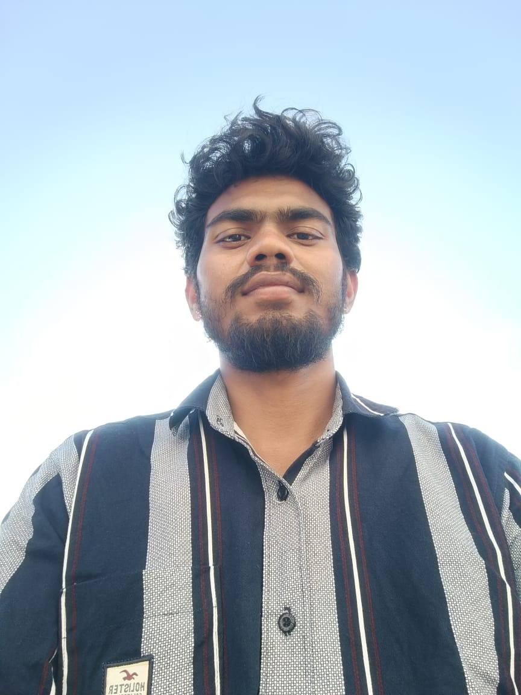

I am a dedicated and enthusiastic Mechanical Engineering graduate from Velagapudi Ramakrishna Siddhartha Engineering College (VRSEC), Vijayawada, with a strong passion for technology and innovation. Throughout my academic journey, I cultivated a keen interest in software development, recognizing the critical role that technology plays across all industries, including engineering.
Driven by curiosity and a desire to diversify my skill set, I proactively learned multiple programming languages such as Java, Python, and C, building a solid foundation in both object-oriented and procedural programming paradigms. I also developed proficiency in database management systems, particularly MySQL, enabling me to design and manage efficient and secure data solutions.
In addition to backend development skills, I explored the creative side of technology by diving into UI/UX design. I focused on creating user-centered designs that prioritize usability, accessibility, and seamless interaction. This experience allowed me to blend technical problem-solving abilities with aesthetic design principles, giving me a well-rounded perspective on software development.
Throughout my learning journey, I have undertaken various projects, practiced real-world problem-solving, and continuously updated myself with new tools and technologies. My multidisciplinary background gives me a unique edge, allowing me to approach challenges from both an engineering and software development perspective.
I am passionate about continuous learning, eager to work on innovative projects, and committed to contributing effectively to any team or organization. With a strong foundation in both engineering principles and software technologies, I am excited to build solutions that make a meaningful impact.